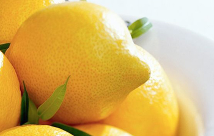

首页
网站说明
心理测试
关于我们
•
联系我们
•
隐私条款
•
友情链接
•
广告合作
推荐
爱情
个性
趣味
健康
专业
付费
你该补充哪种爱情维他命？
13855 人测试过
2014-07-26 发布

想知道自己该补充哪种爱情维他命呢？想要知道答案的话，快来测试一下吧!
开始测试
猜你喜欢：
换一换
你的忘性比记性好吗
学生时代大家总是抱怨着背书,越长大越发觉得记性变得不好了,下面这个小测试来看看你的忘性比记性好吗?
参与人数：14873
题量： 1
你该补充哪种爱情维他命？
想知道自己该补充哪种爱情维他命呢？想要知道答案的话，快来测试一下吧!
参与人数：13855
题量： 1
外向程度测试
外向程度测试得分范围在0与100之间，外向程度测试能够映射一个人内倾或外倾的程度。如果你想了解究竟是内向还是外向，“外向程度测试”能够满足你的要求。本测验包含50个题目，预计完成测试需要6-10分钟左右
参与人数：15826
题量： 50
看看你的负心指数到底多少？
你是个负心人吗？会因为各种现实而抛弃全心爱你的人吗？让我们来测测你的负心指数吧！
参与人数：16280
题量： 1
你们在磨合期会遇到什么矛盾？
每对情侣都会经历一段爱情的磨合期，这个时间或短或长，而许多原本看似美好的爱情都倒在了磨合期，输给了时间。现在就来测测你们之间在爱情磨合期可能遇到什么矛盾，调和的可能性有多大吧！
参与人数：13640
题量： 13